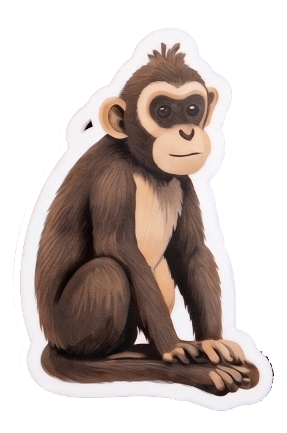

How I design learning
I build ideas into experiences, and keep the person at the center the whole way through.
Learning by doing
People learn by making something real, not by sitting through hours of lectures.
Experiential, not a test
Learning is an experience to move through, not an exam to pass.
A mentor beside you
Working alongside learners and coaching through the challenges helps move people to find their next step.
Community as Curriculum
How do you get 220 learners to really understand a community they have never met? You send them out to listen. Across 25 communities in Bali, teams sit with real people, ask, and try to see the world through someone else's eyes before they design a single thing.
My real challenge was two sided: building a pipeline of communities willing to open their doors, and equipping learners to take on the hard work of collaboration.
Read the case study


My Bali App
How might someone experience their first week at the Academy? By building and shipping their own iOS app in just five days. My Bali App takes brand new Academy learners from a big idea to something real on their phone, fast.
My job was to make five days feel possible, designing the experience with enough support to carry someone all the way to their first shipped app.
Read the case study